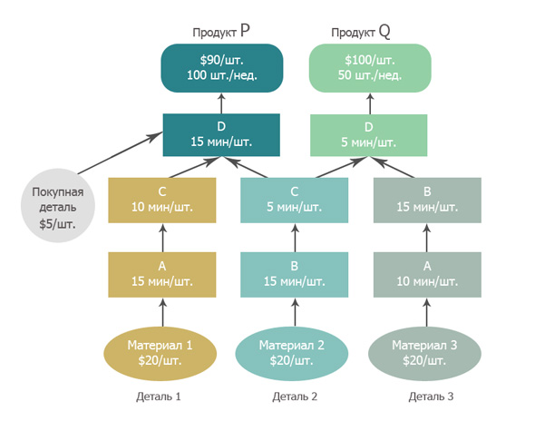

Проблема PQ (PQ problem) - простой производственный пример, используемый для иллюстрации влияния финансовых показателей на принятие решений.
В этом примере компания производит только два продукта, а спрос превышает возможности, поэтому существует одно активное внутреннее ограничение.
Обычные финансовые показатели выручки от продаж, затрат на рабочую силу и валовой прибыли на единицу продукции — все они благоприятствуют продукту Q.
Однако, если руководство, полагаясь на эти показатели, решит отдать предпочтение продукту Q на рынке, компания потеряет деньги; тогда как, если они отдают предпочтение продукту P, они заработают деньги. Эта проблема показывает, что неспособность идентифицировать и правильно использовать ограничение может оказать существенное негативное влияние на итоговый результат.
См.: ограничение, эксплойт, Задача Голдратта
#производство
#экономика
#парадигма
Примечание АВ: Описание и решение задачи на TOC People https://tocpeople.com/2014/02/sindrom-stoga-sena-12/ и https://tocpeople.com/2014/03/reshenie-zadachi-goldratta/ (далее с источника TOC People, смотри комментарии)
Предположим, что наш идеальный завод лишен какой-либо неопределенности и проблем. Все работает идеально, у нас есть вся необходимая информация. Сможем ли мы теперь точно ответить, сколько прибыли заработает наш завод на следующей неделе?
Условия задачи. Наш идеальный завод выпускает два продукта: P и Q. Дефектов — ноль. Планово-предупредительных ремонтов нет. Время переналадки оборудования равно нулю.
Отпускные цены на наши продукты жестко зафиксированы: продукт Р стоит $90 за 1 штуку, и Q стоит $100 за 1 штуку.
Абсолютно точно известно, что рынок готов у нас купить 100 штук P и 50 штук Q в неделю.
Схема сборки продуктов представлена на рисунке.

На нашем заводе у нас имеется по одному работнику каждого типа A, B, C и D, и они абсолютно не взаимозаменяемы.
Каждый рабочий доступен 5 дней в неделю, 8 часов в день, 60 минут в час. Или 2400 минут в неделю. Простоев нет.
Операционные расходы составляют $6000 в неделю и включают зарплату рабочих, продавцов, управленческого персонала и деньги, которые мы платим за электроэнергию, банковский кредит и т.д.
В операционные расходы не входят затраты на материалы и покупные детали. Количество известно, цена каждого материала ($20) и покупной детали ($5) известна.
Итак, вопрос: «Какую максимальную прибыль (или убыток) может заработать компания за неделю?».
Примечание ДП (со слов ДЕ): более рентабельный продукт Q но у продукта P больше Проход.
Примечание АВ: Если нет ограничения мощности, и мы можем произвести всё что покупает рынок, то принимает решения только на основе готовности рынка покупать. То есть действует Ограничение рынка, и мы руководствуемся правилом “сколько максимум заработаем при таком потреблении”. Решение: так как мощность производства: 160 ед/неделю. Поэтому стратегия: производим сначала P, а на остатки Q.
Синоним: PQ problem